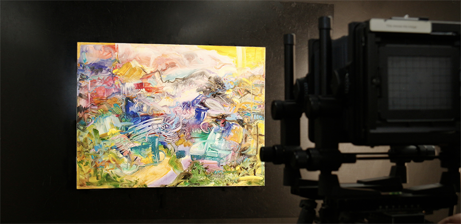

A FineArt Impressões é uma líder reconhecida no mercado de impressões em fine art, oferecendo serviços de alta qualidade e personalização para artistas, fotógrafos e entusiastas da arte. Com um compromisso inabalável com a excelência e uma paixão pela preservação e reprodução fiel da arte, nós somos a escolha preferida para aqueles que buscam dar vida às suas criações de forma impressionante. Nossa empresa orgulha-se de contar com uma equipe de especialistas altamente qualificados e experientes em técnicas de impressão fine art. Trabalhamos em estreita colaboração com cada cliente para entender suas necessidades e objetivos específicos, garantindo que cada projeto seja tratado com a devida atenção e cuidado. Desde a seleção dos melhores materiais até a escolha das técnicas adequadas, nos esforçamos para garantir que cada impressão seja um reflexo fiel da visão artística original.

Utilizando equipamentos de última geração e técnicas avançadas, somos capazes de produzir impressões de altíssima qualidade, com detalhes nítidos, cores vibrantes e uma reprodução precisa das texturas e nuances da obra original. Além disso, oferecemos uma ampla variedade de opções de acabamento e materiais, como papéis artísticos de alta qualidade, canvas, metal e acrílico, permitindo que cada cliente encontre a melhor forma de apresentar sua arte.

Na FineArt Impressões, entendemos a importância da preservação da autenticidade e exclusividade de cada obra de arte, Portanto, todas as nossas impressões são realizadas com materiais de arquivo, resistentes aos efeitos do tempo, garantindo sua durabilidade e preservação ao longo dos anos. Oferecemos serviços de edição limitada e certificação de autenticidade, agregando valor e prestígio às obras dos artistas que confiam em nosso trabalho. Além disso, a FineArt Impressões está comprometida com práticas ambientalmente responsáveis. Utilizamos tintas à base de pigmentos duradouros e materiais sustentáveis sempre que possível, minimizando o impacto ambiental de nossas operações. Seja você um artista em busca de reproduzir e compartilhar suas obras de arte, um fotógrafo que deseja exibir suas imagens com a máxima qualidade ou um amante da arte em busca de decoração exclusiva e sofisticada, nós estamos pronta para atender às suas necessidades. Combinando expertise técnica, atendimento personalizado e um compromisso com a excelência, nos esforçamos para transformar suas criações em peças de arte deslumbrantes e duradouras.